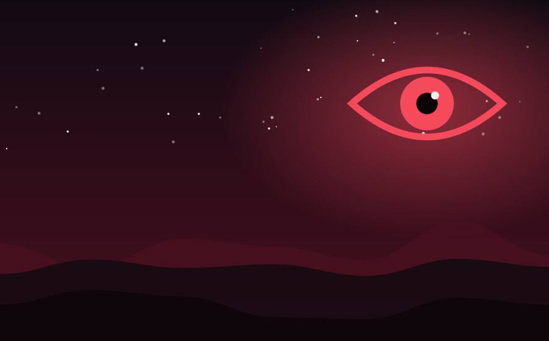

Chapter 1 of 1
Route 13, Final Service

The sign said Route 13, but Mika had never taken a Route 13 before. It was 11:48 p.m., it was raining, and her feet hurt, so she climbed on without thinking and tapped her card. The reader beeped twice, as if it was surprised.
There were five other passengers. None of them were on their phones. They sat perfectly upright, facing forward, and as the bus pulled away, every head turned slowly toward her, smiled politely, and turned back. Mika told herself it was a night-shift crowd, tired and strange.
The first stop was a field. The second was a house with every window lit. The third was her own street, her own gate, her own porch, and on that porch, through the rain, she saw herself waving. The old woman beside her patted her hand. "That's the lucky one," she whispered. "You can still get off here."
Mika stood. The doors hissed open. Behind her, the passengers began to hum something soft and sad. She stepped into the rain, ran up the path, and locked the door. When she looked back, the bus was gone, but five wet footprints led up her porch steps and stopped, politely, at the mat.
— The End —